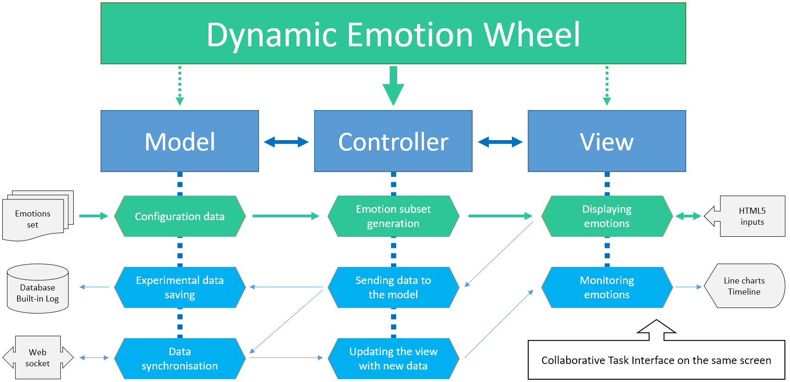

Third Party Code pour applications web
Mattia A. Fritz
TECFA, Université de Genève
Idéalement...
— Fritz (2015)
Les développeurs passent leur temps à créer !
Répartition du temps (indicative)
Comment optimiser le temps ?
-
Utiliser des outils de développement
Éditeur de texte, gestionnaire de versions, ... -
Adopter des bonnes pratiques
Organisation des fichiers, indentation du code, guides de style, ... -
Suivre une méthodologie de développement
Approche centrée utilisateur, méthode Agile, tableau Kanban, ... -
Documenter le projet (e.g. mémoire MALTT)
Architecture, blueprint, commentaires dans le code, ... -
Intégrer du code réutilisable
Framework, bibliothèques, plug-in, ...
Exemple d'architecture logiciel
Tiré de Fritz (2015)
Third Party Code

Code réutilisable par acteurs sans implication directe.
Différents degrés d'abstraction

Code réutilisable côté-client
Il peut s'appliquer à tout élément de la triade
Bibliothèques JavaScript
— Tiré de la page homonyme sur EduTechWiki
Incorporation dans la page
Le code est incoporé normalement à travers la balise script.
<script src="path/to/file.js"></script>
<script src="https://link.to/file.js"></script>
Deux possibilités d'incorporation qui peuvent se combiner dans la même page pour différents fichiers :
- Télécharger le fichier depuis le site officiel ou GitHub et le téléverser ensuite sur son propre serveur.
- Utiliser une Content Delivery Network (CDN). Les fichiers sont hébergés dans le "cloud".
Fichiers sur son propre serveur
Utiliser le chemin relatif à la page qui incopore les fichiers :
<script src="./assets/vendor/revealjs/reveal.js"></script>
<script src="./assets/vendor/revealjs/plugin/zoom/zoom.js"></script>
<script src="./assets/vendor/revealjs/plugin/notes/notes.js"></script>
<script src="./assets/js/my-app.js"></script>
L'ordre des fichiers est souvent fondamental !
Par exemple les plugins doivent être incorporés après la bibliothèque principale, et si vous utilisez des élément de la bibliothèque dans votre code, vos propres fichiers JavaScript doivent être incorporés plus bas. Ce mécanisme concerne également les fichiers CSS et s'applique même si vous utilisez une CDN.
Content Delivery Network (CDN)
Utiliser le URL absolu du fichier hébergé dans le cloud :
<script
src="https://cdnjs.cloudflare.com/ajax/libs/vue/2.6.12/vue.common.dev.min.js"
integrity="sha512-PkyFg1MEb/EwsFAqzqvZqWdMT4ItV+E1NgOtfBC9X8UecJcO9bwirD+v/9tJwci4wTNHdNYBk4ev6ceb1hy73g=="
crossorigin="anonymous"
></script>
L'attribut integrity contrôle que le contenu du
fichier n'a pas été modifié. Le moindre changement dans le code du
fichier modifie le code d'integrité et, sans correspondance, le
navigateur bloque l'incorporation du fichier.
Voir par exemple CDNjs.com
Quelques exemples
-
Revealjs
Création de diaporama en HTML5/CSS/JavaScript (c.f. cette présentation). -
Plotly
Représentation visuelles interactives (c.f. slide sur la répartition du temps). -
Graphery SVG
Création de dessins SVG avec fonctions JavaScript. -
P5.js
Utilisation artistique du code, basé sur la philosophie du langage Processing.
Graphery SVG : coder du SVG
Voir l'horaire de
Décalage relatif à l'horaire de Genève, Suisse. Adaptation d'un exemple tiré du site officiel.
P5.js : creative coding
Cliquez sur la toile et trainez la souris pour dessiner des éléments en formes, tailles et couleurs aléatoires. Cliquez la touche delete pour effacer complétement la toile.
Choisir du 3rd party code
-
Définir objectifs, taille et complexité du projet
Est-ce que le code réutilisable facilite vraiment le développement ? -
Évaluer la qualité de la documentation
Documentation exhaustive et soignée, présence de petits tutoriels Getting started, ... -
Identifier le(s) responsable(s) du code
Des projets sont abandonnés rapidement, d'autres sont maintenus par communautés/entreprises. -
Contrôler attentivement la licence d'utilisation
Open-source, utilisation personnelle, commerciale, ...
Pour aller plus loin
Les concepts abordés dans cette présentation sont traités de manière plus exhaustive dans l'article Bibliothèques JavaScript sur EduTechWiki.
EduTechWiki est un wiki sur la technologie éducative hébergé est maintenu par TECFA, une unité de l'Université de Genève, depuis 2006.